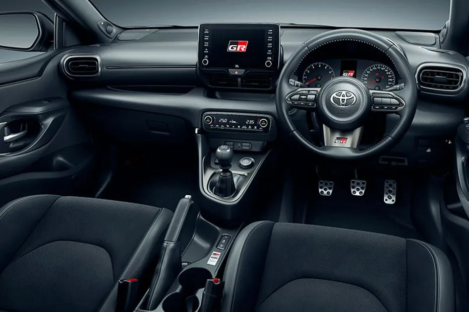

 Varian ini merupakan varian terendah dari GR Yaris. Dimana,tidak seperti varian-varian diatasnya, varian ini hanya menggunakkan mesin
1.500 cc Naturally Aspirated yang berkode M15A-FKS yang hanya memiliki tenaga sebesar 120 dk dan torsi 145 NM yang menyalurkan tenaganya ke kedua roda depan melalui transmisi CVT (Continous Variable Transmission) dengan gigi virtual 10 percepatan.Serta varian ini hanya dijual di Jepang. Meskipun begitu,varian in tetap menggunakkan sistem suspensi yang sama dengan varian lainnya dan juga menggunakkan velg berukuran 18 inch dan ban berukuran 225/40/R18. Serta memiliki rem berukuran 15 inch (rem depan) dan 16 inch (rem belakang)
Varian ini merupakan varian terendah dari GR Yaris. Dimana,tidak seperti varian-varian diatasnya, varian ini hanya menggunakkan mesin
1.500 cc Naturally Aspirated yang berkode M15A-FKS yang hanya memiliki tenaga sebesar 120 dk dan torsi 145 NM yang menyalurkan tenaganya ke kedua roda depan melalui transmisi CVT (Continous Variable Transmission) dengan gigi virtual 10 percepatan.Serta varian ini hanya dijual di Jepang. Meskipun begitu,varian in tetap menggunakkan sistem suspensi yang sama dengan varian lainnya dan juga menggunakkan velg berukuran 18 inch dan ban berukuran 225/40/R18. Serta memiliki rem berukuran 15 inch (rem depan) dan 16 inch (rem belakang)
 Varian ini merupakan varian salah satu varian GR Yaris yang cocok untuk digunakan kompetisi. Varian ini mengusung Mesin 1.6 litre turbocharger,Penggerak semua roda (AWD),dan juga transmisi manual 6 percepatan dengan fitur iMT seperti tipe RZ. Namun pada varian ini fitur-fitur kemewahan seperti fitur ADAS (Active Driving Assist System), Head Unit Touchscreen serta fitur-fitur kemewahan lainnya itu dihilangkan. Sementara,untuk fitur A/C pada mobil ini menjadi opsional. Hal itu dilakukan oleh Toyota dengan alasan menghemat bobot. Selanjutnya,untuk ukuran velg adalah 17 inch dan ukuran ban ialah 205/45/R17. Meskipun demikian,pada varian ini juga terdapat velg 18 inch yang dibalut ban berukuran 225/40/R18 yang dihadirkan sebagai opsional dari varian ini. Pada varian ini menggunakkan rem berukuran 16 inch, baik untuk rem depan maupun belakang.
Varian ini merupakan varian salah satu varian GR Yaris yang cocok untuk digunakan kompetisi. Varian ini mengusung Mesin 1.6 litre turbocharger,Penggerak semua roda (AWD),dan juga transmisi manual 6 percepatan dengan fitur iMT seperti tipe RZ. Namun pada varian ini fitur-fitur kemewahan seperti fitur ADAS (Active Driving Assist System), Head Unit Touchscreen serta fitur-fitur kemewahan lainnya itu dihilangkan. Sementara,untuk fitur A/C pada mobil ini menjadi opsional. Hal itu dilakukan oleh Toyota dengan alasan menghemat bobot. Selanjutnya,untuk ukuran velg adalah 17 inch dan ukuran ban ialah 205/45/R17. Meskipun demikian,pada varian ini juga terdapat velg 18 inch yang dibalut ban berukuran 225/40/R18 yang dihadirkan sebagai opsional dari varian ini. Pada varian ini menggunakkan rem berukuran 16 inch, baik untuk rem depan maupun belakang.
 Varian ini merupakan salah satu varian GR Yaris yang lebih tinggi dari varian RS dan RC. Yang dimana, untuk sektor mesin,transmisi dan penggerak ,mobil ini menggunakkan mesin 1.6 litre (1600cc), transmisi 6 percepatan manual,serta juga penggerak semua roda dengan sistem GR-FOUR layaknya tipe GR Yaris lainnya (kecuali tipe RS). Akan tetapi,terdapat berbagai kelengkapan yang lebih mewah seperti,A/C, ADAS (Active Driving Assist System),Head unit dengan konektivitas Apple CarPlay dan Android Auto serta fitur-fitur kemewahan lainnya termasuk juga opsi speaker JBL. Kemudian untuk ukuran velg dan ban sama seperti varian RS,Namun untuk ukuran rem di varian ini lebih besar (18 inch depan,16 inch belakang).
Varian ini merupakan salah satu varian GR Yaris yang lebih tinggi dari varian RS dan RC. Yang dimana, untuk sektor mesin,transmisi dan penggerak ,mobil ini menggunakkan mesin 1.6 litre (1600cc), transmisi 6 percepatan manual,serta juga penggerak semua roda dengan sistem GR-FOUR layaknya tipe GR Yaris lainnya (kecuali tipe RS). Akan tetapi,terdapat berbagai kelengkapan yang lebih mewah seperti,A/C, ADAS (Active Driving Assist System),Head unit dengan konektivitas Apple CarPlay dan Android Auto serta fitur-fitur kemewahan lainnya termasuk juga opsi speaker JBL. Kemudian untuk ukuran velg dan ban sama seperti varian RS,Namun untuk ukuran rem di varian ini lebih besar (18 inch depan,16 inch belakang).
 Varian ini memiliki kelengkapan yang hampir sama dengan tipe RZ,hanya saja pada varian ini memiliki beberepa fitur seperti intercooler spray,TorSen Limited Slip Differential di bagian depan dan belakang serta velg BBS Forged Alumunium yang dibalut pada ban yang berukuran 225/40/R18 yang mampu menahan kecepatan yang lebih tinggi.
Varian ini memiliki kelengkapan yang hampir sama dengan tipe RZ,hanya saja pada varian ini memiliki beberepa fitur seperti intercooler spray,TorSen Limited Slip Differential di bagian depan dan belakang serta velg BBS Forged Alumunium yang dibalut pada ban yang berukuran 225/40/R18 yang mampu menahan kecepatan yang lebih tinggi.
 Varian ini merupakan varian GR Yaris paling buas yang pernah dibuat Toyota sampai saat ini. Dimana pada GR Yaris varian ini mendapatkan sejumlah ubahan yang membuatnya semakin buas ketika dipacu di lintasan aspal dan juga tanah. Pada GR Yaris varian ini,terdapat tiga versi. yang pertama adalah Circuit Package, pada versi ini memiliki bodykit yang lebih agresif dibandingkan GR Yaris varian lainnya,pembagian tenaga roda depan dan belakang 45:55 pada saat mode Track diaktifkan,spoiler belakang berbahan serat karbon,ban dengan lebar 235/40/R18 yang membalut velg BBS 18 inch yang berwarna abu-abu doff, LSD (Limited Slip Differential) mekanikan untuk sirkuti,dan suspensi adjustable buatan Bilstein,dan lainnya. Yang kedua adalah varian Rally Package. Pada varian ini memiliki velg 17 inch yang dibalut ban dengan,LSD (Limited Slid Differential) untuk sirkuit,dan Rollcage yang memiliki sidebar,velg 17 inch yang dibalut ban berukuran 205/45/R17 peredam kejut buatan Gazoo Racing (GR),dan lainnya.Yang terakhir adalah GRMN Yaris, untuk varian ini memiliki kelengkapan yang mirip seperti Rally Package tetapi memiliki kelengkapan-kelengkapan seperti airbag samping. Untuk varian ini,menggunakkan mesin yang sama seperti versi GR Yaris bertransmisi manual lainnya. Namun untuk varian ini memiliki torsi sebesar 390nm serta pada varian ini memiliki kap mesin dan atap yang berbahan karbon.
Varian ini merupakan varian GR Yaris paling buas yang pernah dibuat Toyota sampai saat ini. Dimana pada GR Yaris varian ini mendapatkan sejumlah ubahan yang membuatnya semakin buas ketika dipacu di lintasan aspal dan juga tanah. Pada GR Yaris varian ini,terdapat tiga versi. yang pertama adalah Circuit Package, pada versi ini memiliki bodykit yang lebih agresif dibandingkan GR Yaris varian lainnya,pembagian tenaga roda depan dan belakang 45:55 pada saat mode Track diaktifkan,spoiler belakang berbahan serat karbon,ban dengan lebar 235/40/R18 yang membalut velg BBS 18 inch yang berwarna abu-abu doff, LSD (Limited Slip Differential) mekanikan untuk sirkuti,dan suspensi adjustable buatan Bilstein,dan lainnya. Yang kedua adalah varian Rally Package. Pada varian ini memiliki velg 17 inch yang dibalut ban dengan,LSD (Limited Slid Differential) untuk sirkuit,dan Rollcage yang memiliki sidebar,velg 17 inch yang dibalut ban berukuran 205/45/R17 peredam kejut buatan Gazoo Racing (GR),dan lainnya.Yang terakhir adalah GRMN Yaris, untuk varian ini memiliki kelengkapan yang mirip seperti Rally Package tetapi memiliki kelengkapan-kelengkapan seperti airbag samping. Untuk varian ini,menggunakkan mesin yang sama seperti versi GR Yaris bertransmisi manual lainnya. Namun untuk varian ini memiliki torsi sebesar 390nm serta pada varian ini memiliki kap mesin dan atap yang berbahan karbon.
| Varian | GRMN" | RZ dan RZ "High Performance" | RC | RS |
|---|---|---|---|---|
| Mesin | G16E-GTS | G16E-GTS | G16E-GTS | M15A-FKS |
| Kapasitas Mesin (Cc) | 1,618cc Inline 3 Turbocharger | 1,618cc Inline 3 Turbocharger | 1,618cc Inline 3 Turbocharger | 1,490cc Inline 3 Naturally Aspirated (N/A) |
| Tenaga | 272dk | 257-268dk | 257-268dk | 120dk |
| Torsi | 390nm | 360-370nm | 370nm | 145nm |
| Bobot | 1,250kg - 1,260kg. | 1,280kg | 1,250kg | 1,130kg |
| Transmisi | 6-speed manual transmission (iMT)/Close-ratio gears + low geared final. | 6-speed manual transmission (iMT) | 6-speed manual transsmision (iMT) | Direct-Shift CVT (Continously Variable Transmission) with 10 speed simulated gears |
| Penggerak | Penggerak semua roda (AWD) 3 pengaturan pembagian torsi (Normal/Sport/Track) + GR Mechanichal Limited-Slip Differential (front and rear). | Penggerak semua roda (AWD) dengan 3 pengaturan pembagian torsi (Normal/Sport/Track) (RZ,RZ "High Performance") and front and rear TorSen Limited-Slip Differential (RZ "High Performance"). | Penggerak semua roda (AWD) with 3 torque split settings (Normal/Sport/Track). | Penggerak roda depan (FWD). |
| Kapasitas Tangki BBM | 50 liter. | 50 liter. | 50 liter. | 50 liter. |
| Radius Putar Minimum | 5.7m (Circuit Package), 6.0m (GRMN,Rally Package). | 5.3m. | 6.0m. | 5.2m |
| Dimensi (PxLxT) | 4.030m x 1.815m x 1.475m (Circuit Package), 3.995m x 1.805m x 1.455m (GRMN,Rally Package) | 3.995m x 1.805m x 1.455m | 3.995m x 1.805m x 1.455m | 3.995m x 1.805m x 1.455m |
Oleh
Danishvara Ramardhi Adhi (11201251000104)